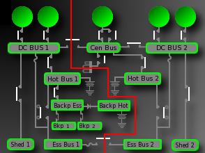
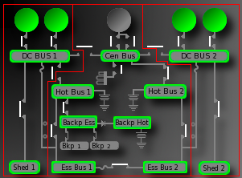

In order to visualize realistic situations, use this portion of the manual to facilitate a walk-through of various procedures. During review, you will re-enforce your understanding with how the electrical system works and how various configurations appear.
The button pad is the primary means of controlling the electrical diagram in the interactive mode of this application. Due to the raw feature of this control, it is possible to affect situations that fall outside of the purview of normal operations. Care must be taken not to cloud the understanding by performing abnormal operations, such as powering up the airplane by selecting the GPU prior to turning the batteries to auto. Although this is a possible scenario on the airplane and permitted within this application, it is not a recommended procedure for properly operating this system. In an effort to provide a realistic and meaningful learning environment, the following scenario guides have been incorporated. Take time to look through the scenarios so that you, the user, can experience the desired situation.
Remember, these scenarios are intended for use within the Interactive Mode of this application. Each scenario also contains an explanation that might further help explain what is taking place. Use the link right of each procedure guide to navigate to the appropriate explanation.
When the Interactive Mode first loads, the system is in the "cold configuration," similar to what you would experience if you arrived at the airplane and no power was being supplied by the batteries or by an external power source, such as the GPU. Notice that Hot Bus 1, Hot Bus 2, and the Backup Hot Bus are always powered off their respective battery. (i.e. Hot Bus 1 is powered at all times by Main Battery 1).
Power-Up the airplane by selecting the Batteries Auto Button on the control pad. Battery contactor 1 & 2 will close, energizing most of the buses. (The shed buses aren't powered). The batteries, without any generator charging them, will deplete rapidly*. Selection of another power source is required so that the batteries don't drain below 19.0 Volts. You may either, start the APU, start & select the GPU, or select All Gens On. Once another power source has been selected, the batteries can be charged or isolated from use due to GPU selection.
*Note: this application has been intentionally programmed to show a very quick discharge rate only for the purposes of simulation.
Select the Start A.P.U button to start the APU This action will cause the APU to be started with one of 3 possible power sources. The APU can be started with:
During APU start, battery contactor 1 will open, isolating battery 1. Once the APU reached 95% RPM + 7 seconds, the APU's generator control unit, or GCU will bring the generator online. At this point, the APU line contactor will close, thus supplying power to the electrical system. Keep in mind that if the GPU is selected, it will take priority over the system and the APU generator will not be brought online until the GPU is de-selected.
To stop the APU, press the Stop APU button.
The GPU can be selected and used to power the electrical system by accessing the secondary display on the button control pad. Tap the More: button to access this display. You must Start the GPU prior to selecting it. The GPU voltage can be seen on the Amp/Volts display above the button control pad. Although not completely realistic, the GPU will always be at 28.0 volts in this application. Realize that a real-world GPU will likely have noticeable variances in voltage and that 26.0 - 29.0 volts is needed prior to selecting the GPU.
Once the GPU is selected, it takes priority over the electrical system. As a result, the 5 generator control units will remain open, even if the APU generator or an engine-driven generator is available.
You will not be able to select Air Logic while the GPU is selected.
Select the All Gens On button after powering up the electrical system. This action will energize all 5 generators and allow them to supply power to the system provided that the GPU isn't selected. You may stop the APU after powering all generators on to view system operation with only the 4 engine-driven generators online.
One goal of the electrical system's controlling logic (Electrical Distribution Logic) is to seek development of a redundant system. This means that if 4 or more generators are available, the system can configure itself into 2 independent electrical networks. The system will split during normal operations at bus tie contactor 1, located between DC BUS 1 and the Central DC Bus. Study the system carefully to note that, in this case, the system is operating as 2 networks(shown below).

In the event that less than 4 generators are available, the system will then configure itself back into one system (not shown). You will note this change happens any time this rule is true. Fore more detail, reference the Failing Generators portion of this section in the manual.
Select the Air Logic / Ground Logic button to configure the airplane's logic to the desired state. The selection of Air Logic will only be permitted provided you have selected All Generators On.
Once in the air, you can see that failing any or all generators has a different affect in than on the ground. If all generators are failed, the system will default to the essential power configuration.
Fail any generator by selecting the Gen 1, 2, 3, 4, or APU Gen Fail Button. If a generator is failed, the button toggles and becomes a reset switch, allowing re-selection of the generator if desired. The shed buses will only be powered with 3 or more generators online.
Select the All Gens Fail EPC Button to fail all generators and send the system into the essential power configuration. This action is only available with Air Logic selected.
The power configuration is a configuration of the electrical system whereby the main batteries power only the essential dc buses. In this event, the main batteries are no longer being charged by a generator and will only remain powered for 40 - 45 minutes. This configuration should occur when there is a loss of all generators event as part of the EDL's logic to shed load and configure the system to power the essential items only. See the explanations provided with Essential Power Transfer Failure and the Abnormal Electrical Emergency Mode.
Press the Elec Ess Xfr Fail A(B) to see this scenario. This action is only available with Air Logic selected.
An essential power transfer failure is defined as an event where all generators have been lost and the system has failed to configure itself into the essential power configuration. This could be due to a bus tie contactor remaining closed and powering one of the dc buses.
Two scenarios are possible with the Elec Ess Xfr Fail Button:
Select the Elec Emer Abnorm button to view this configuration. This action is only available with Air Logic selected and at least one generator online.
Electrical Emergency Abnormal defined as when the system has configured itself into the essential power configuration with one or more generators online. An electrical emergency abnormal means that you could be in the essential power configuration EVEN with all 4 engine-driven generators operating!
In this situation, the main batteries are not receiving any power from the engine-driven generators. Therefore, if the APU isn't being used, the batteries aren't being charged and will provide power to the essential items only for 40-45 minutes. If no further action was taken from this point, you would lose the essential items once the batteries are dead.
If any of the engine-driven generators are online, they will power their respective side of the system alone (i.e.: Generators 1 and 3 would be incapable of powering items on DC Bus 2 and vice-versa)
Notice that both bus tie contactors are open, thus isolating the system into 3 independent networks.

In order to rectify this situation, the APU must be started. By virtue of design, the APU is connected to the Central DC Bus. Since Battery Contactor 2 remains closed, the APU may be started with Battery 2. After start, the APU can then be used to charge the main batteries.